MAQUETACIÓN
Una selección de proyectos de maquetación donde el diseño y la composición se unen para crear piezas visuales claras, equilibradas y con una identidad visual cuidada.
REVISTA NATURA - 2025
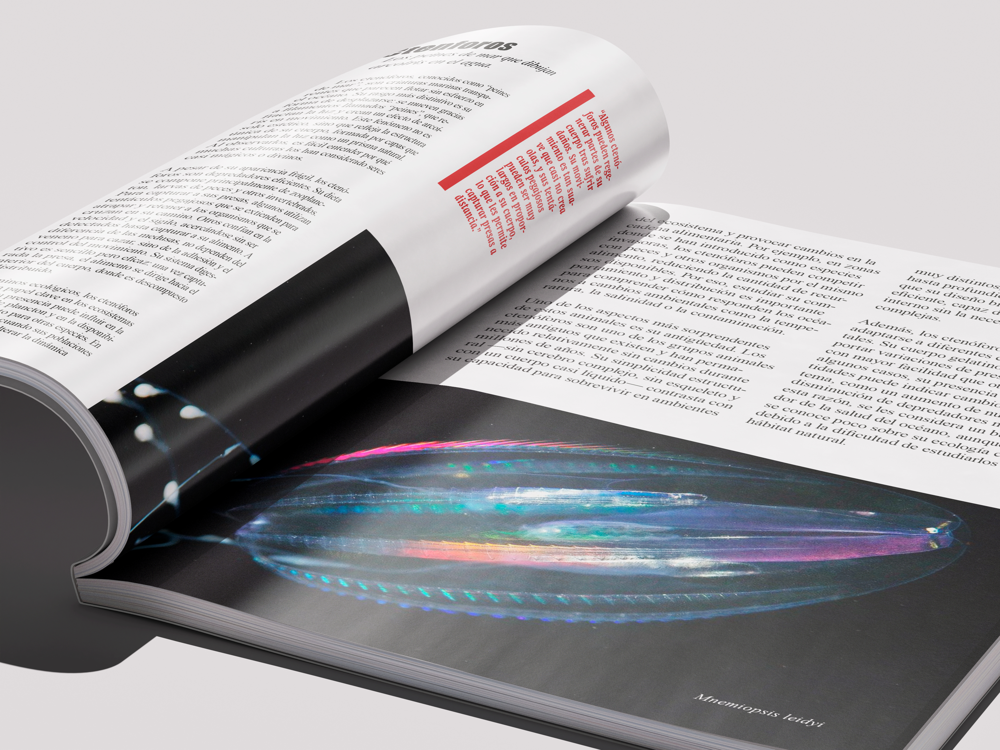
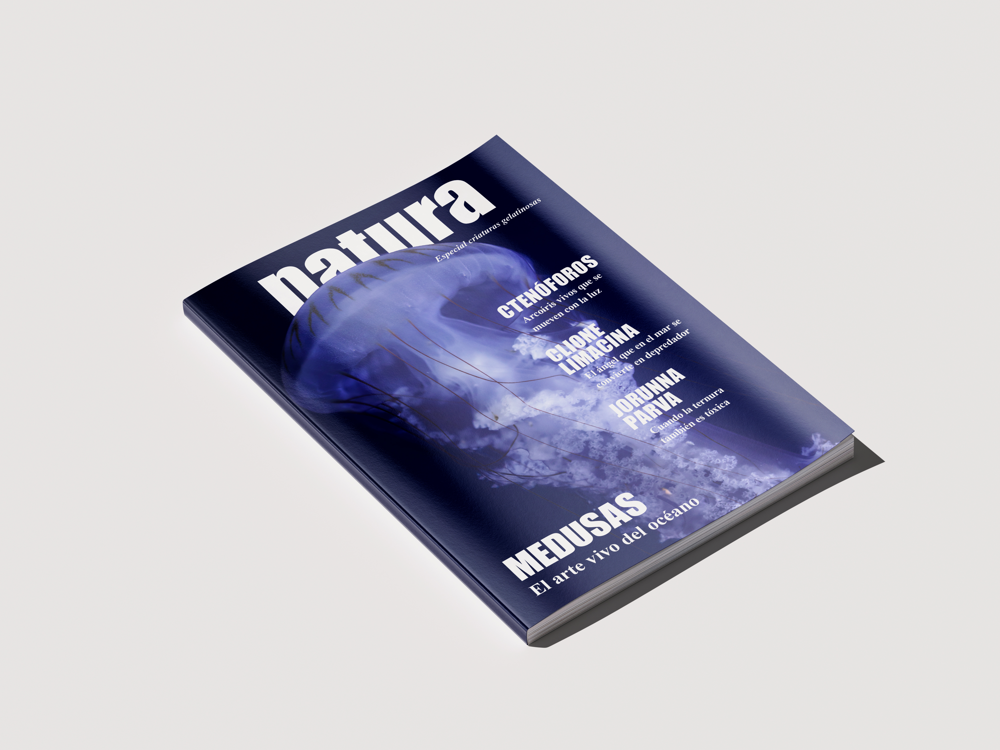
Rediseño de una revista dedicada a la naturaleza, en este caso centrada en una edición especial sobre animales gelatinosos.
El proyecto explora diferentes estructuras de maquetación y composiciones para crear una publicación dinámica y visualmente atractiva.
Se experimenta con la jerarquía de los contenidos a través de tamaños, grosores y colores, buscando generar diferentes ritmos dentro de las páginas.
La fotografía también adquiere un papel protagonista, explorando distintas formas de integrarla con el texto y los demás elementos gráficos para conseguir una composición equilibrada y coherente.
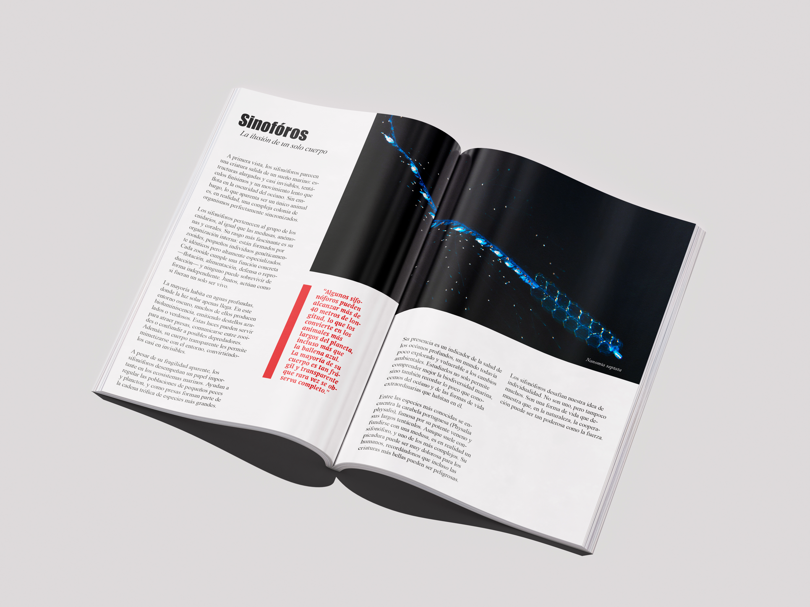
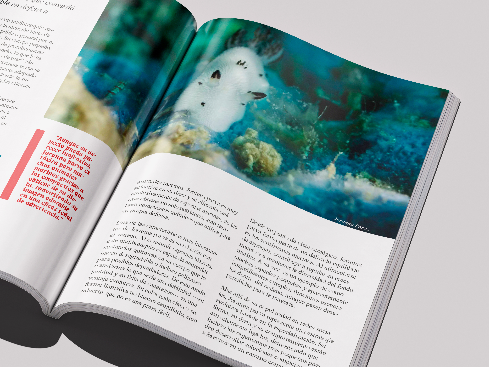
DALIA - 2023
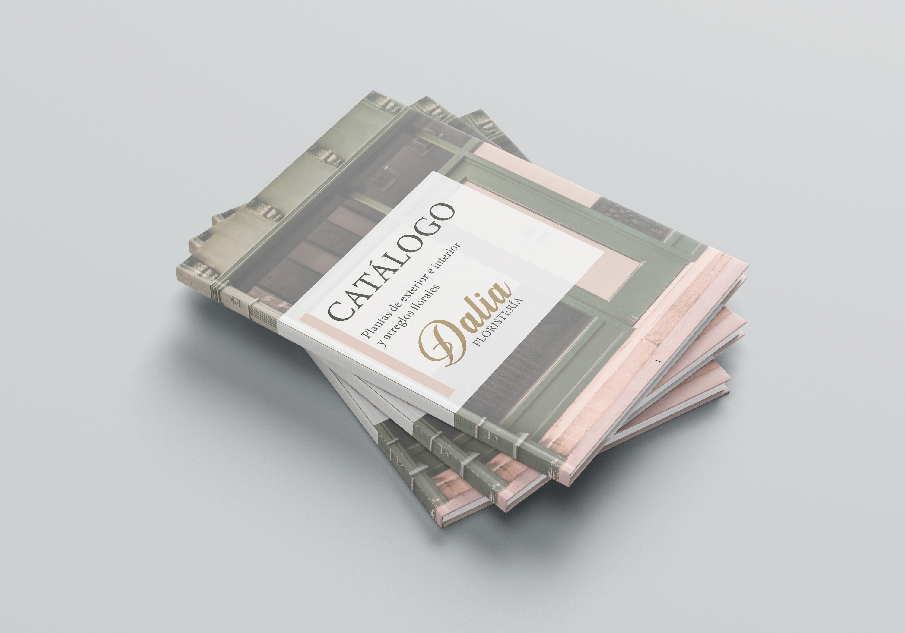
Proyecto de identidad visual para una floristería llamada Dalia, centrado en la creación de un logotipo y el desarrollo de un catálogo floral.
La propuesta busca construir una identidad delicada y reconocible, inspirada en la naturaleza y en la propia esencia de las flores.
El catálogo combina fotografía, tipografía y diferentes composiciones para presentar la variedad floral de forma clara y atractiva, teniendo siempre en cuenta las necesidades del cliente y facilitando la comprensión de la información a la hora de elegir las flores.
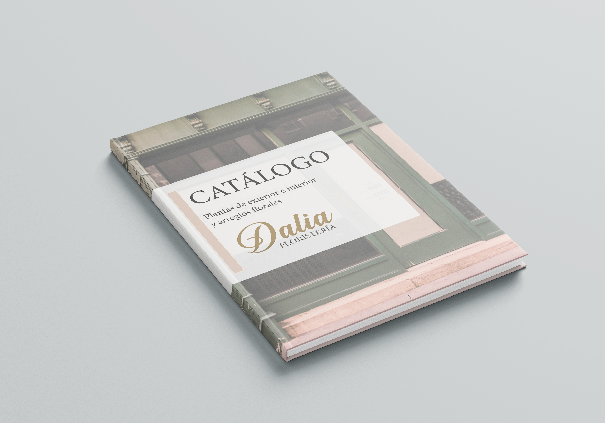
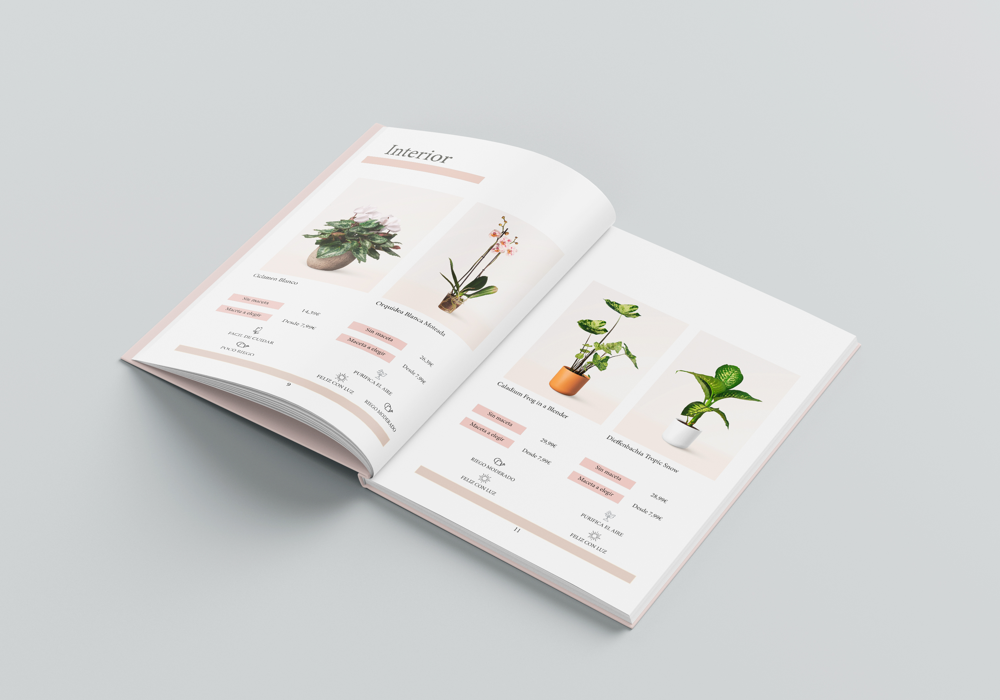
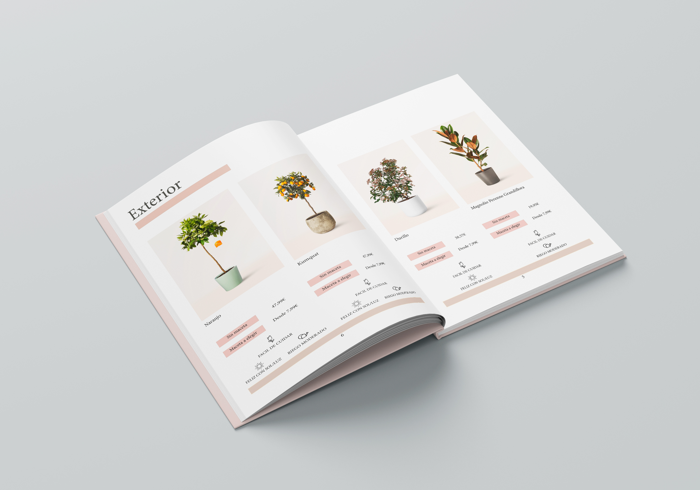
NIDO - 2024
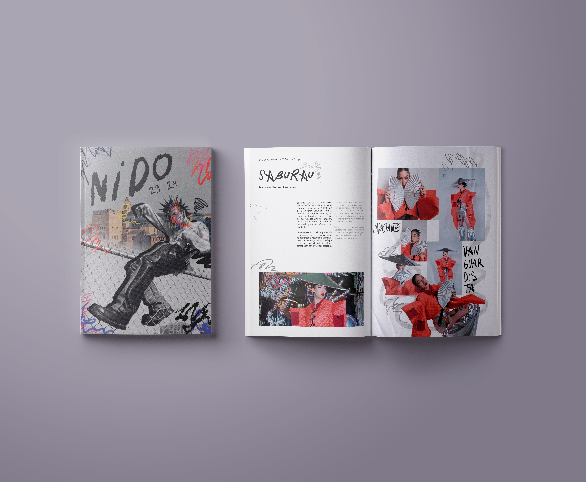
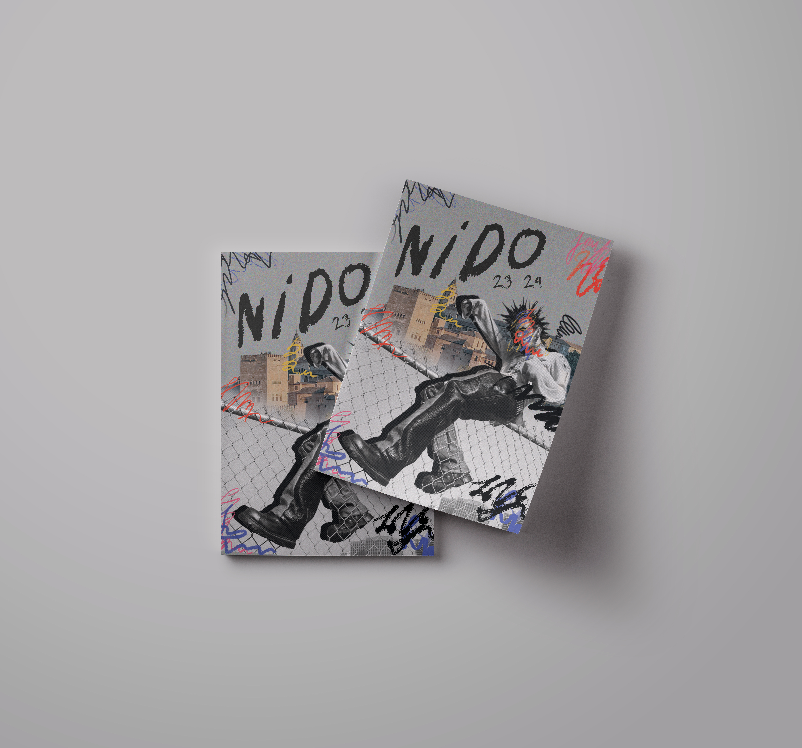
Creación de una revista para ESADA, desarrollada a partir de un concepto de “caos ordenado” que combina una estructura editorial dinámica con una estética de inspiración punk.
El proyecto experimenta con diferentes composiciones, jerarquías y recursos gráficos para generar un ritmo visual cambiante sin perder la coherencia entre páginas.
La combinación de tipografías, fotografías, colores, ilustraciones y elementos gráficos busca crear una publicación atrevida y contemporánea, reflejando el carácter creativo y experimental de la escuela.

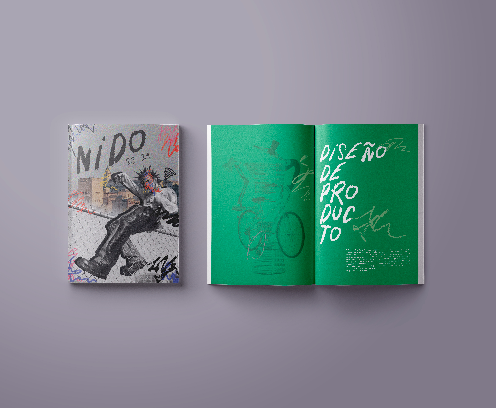
ENTIÉRRAME - 2026
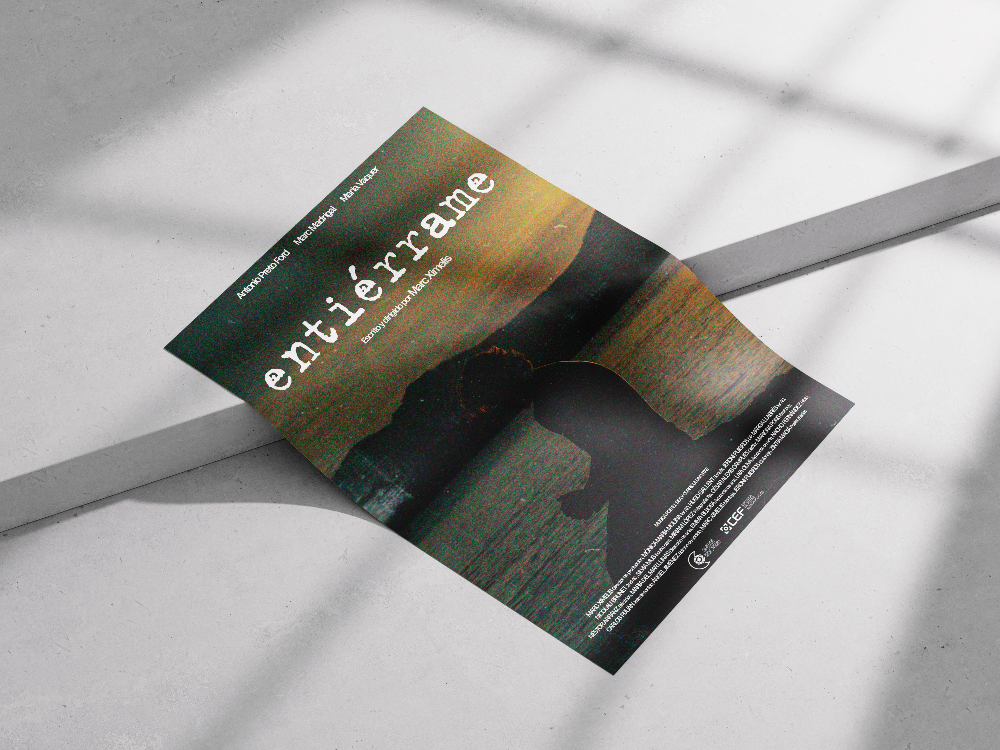
Diseño del cartel para el cortometraje Entiérrame, realizado como propuesta gráfica para acompañar y representar visualmente la historia de la pieza audiovisual.
El proyecto parte de una fotografía editada como elemento principal, sobre la que se construye una composición de carácter cinematográfico y atmosférico.
La tipografía y la imagen se integran buscando transmitir el tono del cortometraje y generar una pieza visual sencilla, evocadora y coherente con su narrativa.
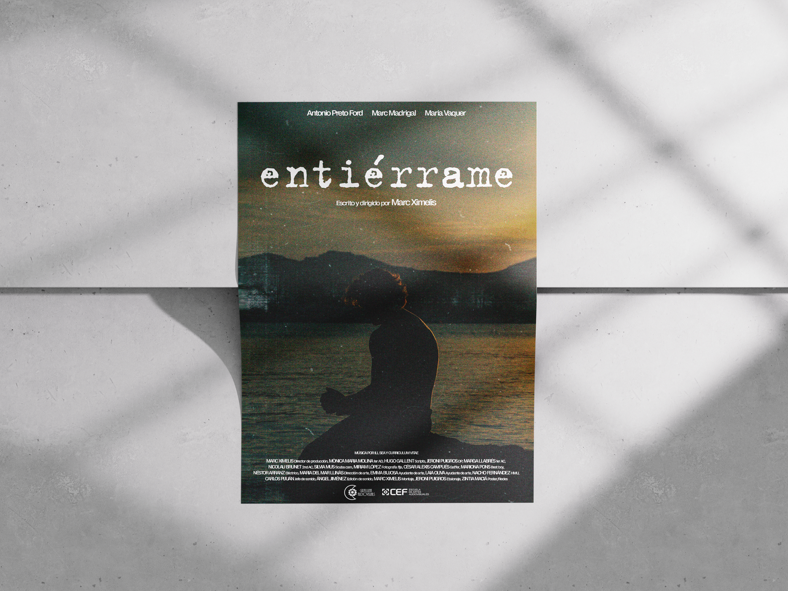